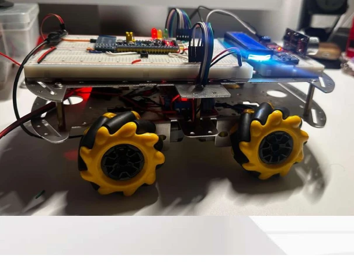
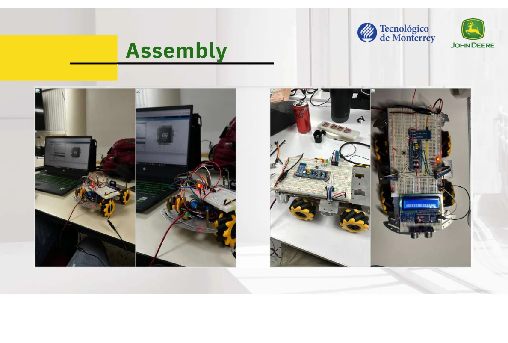

Closing the loop on a scale vehicle.
Built a team prototype combining embedded control, encoder feedback and remote operation.
Physical prototypeInside the project.
Selected visuals from the academic team’s original presentation. Captions distinguish physical hardware from simulation.


The challenge
Integrate mechanical and electronic subsystems into a small vehicle with controlled motor speed and sensor-based behavior.
My contribution
- Worked on STM32 firmware and motor control using PWM.
- Implemented encoder feedback and PID speed control.
- Integrated Bluetooth operation, sensors and peripheral communication.
- Tested behavior, adjusted control parameters and documented the prototype with the team.
Hardware integration
The team prototype combines an STM32F103 controller, motor driver, encoder feedback and Bluetooth operation. The photographs show the assembled vehicle and wiring used during development, connecting firmware work to a tangible test platform.
Engineering focus
Connect feedback, firmware and mechanical behavior through iterative tests.
Outcome & scope
A functioning scale prototype demonstrated the integration of remote operation and closed-loop motor control. No quantified tracking-accuracy claim is included.
Professional experience and academic collaborations are labeled separately. Organization names identify the project context and do not imply endorsement.